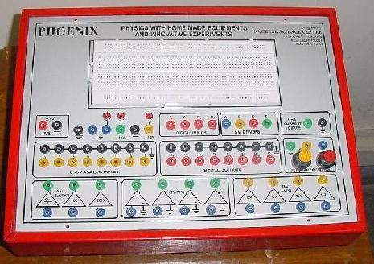
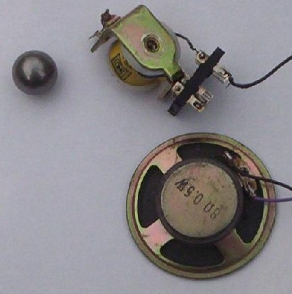
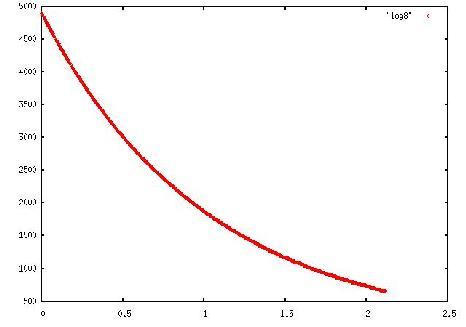

Experimental Physics with Phoenix and Python
By Pramode C.E.
Many of us who had our schooling in the distant past will be having fond memories of time spent in the science laboratories learning fun and exciting things about the world around us. I had a fascination for Chemistry and still recollect doing mildly dangerous experiments with thoroughly user-unfriendly stuff like sulfuric acid behind the closed doors of my `private' home laboratory. Physics was a bit too `intellectual' for my taste, but I was nonetheless excited when I came across the Phoenix Project which aims to bring modern techniques of `computer based' experimental physics within the reach of students and the hobbyist in developing countries. This article is written with the intention of getting teachers and GNU/Linux enthusiasts involved with the project thereby initiating a `community building' effort.
What is Phoenix?
The Phoenix project is the brainchild of B. P. Ajith Kumar, a researcher working with the Nuclear Science Centre of India. Ajith describes Phoenix as Physics with Homemade Equipments and Innovative Experiments. Modern experimental physics makes use of a vast array of complex equipments interfaced with general purpose computers. The data gathered by these equipments is fed into the machine using expensive `Data Acquisition Hardware' (mostly high speed Analog-to-Digital converters) where it is analyzed by sophisticated mathematical tools. The current practice of undergraduate Physics education (at least in the part of the world I live) pays only lip service to this important aspect of the training of a Physicist by incorporating a paper on `C programming' and/or `Microprocessors' in the syllabus. The objective of the Phoenix project is to change the situation for the better by giving school/college students an opportunity to use the computer for observing and analyzing real-world phenomena.
Let me present two simple examples. Measuring time is something which is central to many experiments. Say you wish to measure time of flight of an object under gravity. You note the exact time at which it is dropped; you also measure the time at which it hits the ground. A small steel ball can be easily gripped by an electromagnet which is activated by the PC parallel port. The ball can be dropped by deactivating the coil (just a simple `out' instruction to the parallel port). When the ball hits the `ground', it can be made to close/open some kind of `contact' connected to an input pin of the parallel port. A few lines of code which measures the time at which a parallel port output pin deactivates the coil and the time at which an input pin changes state should be sufficient to verify an important physics principle (Check this out ).
What are the major stumbling blocks behind presenting such an experiment?
- The time/effort involved in building additional hardware (in this case, buffer the parallel port pins to make it capable of driving relay coils).
- The effort involved in writing low-level code. Parallel port I/O and time measurements are trivial to the experienced programmer, but may overwhelm students who have had very little previous exposure to both programming and electronics.
As another example, in basic circuit theory, we learn about the way resistor-capacitor networks behave. A low-cost 8-bit analog to digital converter connected to the parallel port and sampling the voltage on the capacitor periodically will yield lots of numbers which can be analyzed to get a better feel of the way RC networks behave. Again, the major constraints involved here are setting up the ADC circuit and writing measurement programs. There is a solution - purchase commercially available data acquisition hardware and software; this may not be attractive because of the expenses involved.
The Phoenix Approach
For computer based physics experiments to be a reality in our school laboratories, we need:
- Inexpensive hardware built with components available in the local market. The design should be freely available and should be simple enough for students to understand in full, if they wish to.
- A set of experiments which the students can try out without building additional electronic circuits. Too much friction in the beginning may discourage some of the target audience (while some others might relish it as a challenge!).
- A set of software tools which offers a smooth learning curve; the source code must be freely available and motivated students encouraged to read and tinker with it. The platform of choice is undoubtedly GNU/Linux and the programming languages will be C/Python.
Phoenix Hardware
Here is a picture of the fully assembled kit:

The hardware consists of:
- Eight digital output pins.
- Four digital input pins.
- Four stepper motor driver pins. They can be used for driving relay coils also.
- An 8 bit, 8 channel analog-to-digital converter.
- A programmable voltage supply, capable of generating voltages in the +5V to -5V range.
- Amplifier blocks
- A constant current supply
- Low frequency function generator (sine, triangular, square)
A block diagram is available here. You can follow this link to read a detailed description of the working of each of the functional units. Full circuit schematics, with ready to use PCB layout, are also available from the project home page. The design is almost stable; a few boxes have been fabricated and distributed for testing purposes.
Phoenix Software
All the programmable units of the Phoenix kit can be manipulated by doing a few in/out instructions on the parallel port. Two of the issues to be handled were:
- Users shouldn't need any special privilege to access the hardware.
- It should be possible to do reasonably precise time measurements at the sub-millisecond level.
Three approaches were identified:
- Do everything in user-space, non real-time.
- Do everything in user-space, but in real-time (say RTAI LXRT)
- Put the code in the kernel, as a proper `driver'
The third approach was found to be relatively better. Users won't need any special privileges, and kernel code is guaranteed not to be disturbed by other processes (busy timing loops in the kernel will freeze the system, but in almost all cases, we need very short sub-second loops; so this is not a big problem).
A sample driver program (still in the experimental phase!) can be downloaded from here. You will observe that most of the code is one giant `ioctl' which does things like setting the digital output pins, reading the value on the input pins, setting the voltage on the programmable voltage supply, reading the ADC, measuring the time between a rising edge and a falling edge on a digital I/O pin etc.
Phoenix and Python
One of the advantages of putting the timing-sensitive driver code in the kernel is that it now becomes possible for us to interact with the hardware through a language like Python, which can't be normally used for real-time work. Being a Python fan, one of the first things I did with the Phoenix box was to try and write a simple Python library for talking with the hardware. My intention was to be able to do things like:
>>> from phoenix import * >>> p = Phoenix() # We have a `phoenix object' >>> p.set_voltage(2000) # set the DAC output to 2000 mV >>> p.select_adc(0) # select ADC channel 0 >>> p.zero_to_5000() # Digitize voltage on channel 0 and return value between 0 and 5000 mV.Such an interaction, which gives immediate feedback, might be the beginning student's best introduction to the device.
As an aside, it's interesting to see how easily (and naturally) Python can be used for doing sophisticated CS stuff (functional programming, lambda calculus, closures... ) and regular, down to earth, OS interaction as shown in the snippet above. The source code for the (experimental!) Python module can be obtained from here. Readers might be interested in the use of the `fcntl' module and the `struct' and `array' modules for performing the `ioctl' operations required to control the device.
Experiments!
The Phoenix hardware as well as software provides a general framework for easy interfacing and experimentation. I shall describe two very simple experiments I did with the box. The project home page describes some more - one of which is an interesting simple pendulum experiment; check it out here. Designing more experiments is one area where a community of teachers and developers can contribute a lot.
Time of flight
An electromagnet (a disassembled relay coil) is connected to one of the stepper motor driver pins of the Phoenix box and is used to hold a small iron ball tightly. The kernel driver code contains a routine which de-energizes the relay coil, notes down the time and sits in a tight loop till an input pins goes from low to high, noting down the time when this happens. The two timestamps are transmitted back to userland where a Python program captures them and returns the difference.
The iron ball drops down when the relay coil is de-energized and hits the table with a bang. A speaker is placed face down on the table; it picks up the vibrations and converts them to electrical signals. The weak electrical signals are amplified by the amplifier blocks on the Phoenix box and fed to a digital input pin which registers a transition from low to high. The kernel driver code can very easily compute the difference in time between the ball being released and the instance it hits the table, giving rise to an electrical transition on the input pin. This time difference can be plugged into a simple equation and the distance travelled can be computed.
Here is a picture of the setup which I used for conducting this experiment:

And here is the Python code:
from phoenix import * p = Phoenix() p.write_motors(0xf) # Energize stepper motor driver pins t = p.get_drop_time() # Drop the ball and time it! print t
Discharging capacitor
The Phoenix kernel driver contains code to take repeated samples from the ADC (with an optional delay in between). It is possible to start taking samples when a particular trigger is received - the trigger is in the form of a `falling edge' on digital input pin 0. This feature can be used to plot the voltage across a discharging capacitor (I used a 10K resistor and 100uF capacitor). Let's look at the Python code segment:
from phoenix import * p = Phoenix() p.select_adc(0) # 1000 points, 2 ms delay between reads r = p.trig_read_block(1000, 2000) for val in r: print val[0], val[1]
The trig_read_block function collects 1000 samples from the ADC with an in-between delay of 2000 micro seconds. The sample collection starts only when the trigger is received, the trigger being a falling edge on digital input pin 0. The value returned by the function is a list, each element of which is a tuple of the form (timestamp, adval) where `timestamp' is the instant of time when the sample was taken. The `for' loop simply prints these numbers onto the screen; the output can be redirected to a file and plotted using the powerful `gnuplot' utility (a simple command at the gnuplot prompt of the form plot "a.dat"). Here is the graph which I obtained:

Future Direction
The Phoenix project has just come out of the lab. To become a success, like any Free Software/Hardware project, it must be able to attract a community of enthusiasts - science teachers and students, electronics hobbyists, Linux geeks, hardware hackers... Plenty of software has to be written and new experiments designed. I hope that this article will go a small way toward bringing in community involvement. Please feel free to get in touch with me if you are interested in knowing more about the project or wish to arrange a workshop/demonstration. Follow this link to get in touch with the Phoenix developer and learn more about getting the hardware/software.
![[BIO]](../gx/2002/note.png) As a student, I am constantly on the lookout for fun
and exciting things to do with my GNU/Linux machine. As
a teacher, I try to convey the joy of experimentation,
exploration, and discovery to my students. You can read about
my adventures with teaching and learning here.
As a student, I am constantly on the lookout for fun
and exciting things to do with my GNU/Linux machine. As
a teacher, I try to convey the joy of experimentation,
exploration, and discovery to my students. You can read about
my adventures with teaching and learning here.

{kind=link}